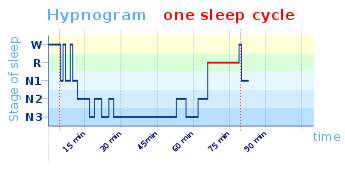

Dwa interesujące nas tutaj pojęcia: "świadomości" i "śnienia" są intuicyjnie łatwo uchwytne. Próby ich bardziej precyzyjnego zdefiniowania odsłaniają jednak ich wewnętrzną złożoność, niejednoznaczność i brak ostrości. W szczególności pojęcie świadomości jest przedmiotem niekończących się filozoficznych dyskusji i sporów.
Poddając świadomość analizie możemy wyróżnić wiele tworzących ją składowych, czy podsystemów. Tym, co nas interesuje w tym przypadku najbardziej, jest fakt, że część z tych systemów jest aktywna zarówno w stanie czuwania jak i podczas snu, inne zaś aktywne są jedynie w stanie czuwania. Śniąc doświadczamy danych zmysłowych, a w szczególności wzrokowych, mimo że do oczu nie napływa żadna informacja ze świata zewnętrznego. Posługujemy się również pojęciami, jesteśmy w stanie rozróżniać obiekty, doświadczamy emocji i w większym lub mniejszym stopniu zapamiętujemy treść snów. Czego zatem brakuje? Przede wszystkim wolicjonalnej kontroli dotyczącej naszych poczynań w trakcie snu oraz "metarefleksji", która pozwoliłaby nam zorientować się, że śnimy (podobnie jak teraz świadom jesteś, że czytasz ten tekst w swoim pokoju, autobusie etc.).
Z definicji sen jest przeciwieństwem stanu czuwania, a jednym z jego podstawowych wyróżników jest "zawieszenie świadomości". Świadome śnienie jest więc śnieniem "wzbogaconym" o te brakujące komponenty świadomości.
Termin "świadome śnienie" został najprowdopodniej użyty po raz pierwszy przez holenderskiego psychologa Frederika van Eedena w artykule "A study of dreams". Van Eeden jest również autorem klasyfikacji snów, która obejmuje siedem kategorii marzeń sennych: sny pierwotne (initial dreams), patologiczne, zwykłe, demoniczne, żywe, ogólne wrażenia senne (general dream-sensations) i świadome sny.
Sen nie jest zjawiskiem "jednolitym" i składa się z kilku faz. Dwie główne fazy snu to faza NREM (non-rapid eye movement) i faza REM (rapid-eye movement). Ta pierwsza trwa 80-100 minut (a u noworodków 50-60 minut) i następuje po niej - trwająca około 15 minut - faza REM. Cykl ten powtarza się kilkukrotnie (4-5 razy) w ciągu nocy. W fazie NREM pojawiają się fale delta aktywności elektrycznej mózgu. W fazie REM z kolei (nazywanej też snem paradoksalnym) pojawiają się marzenia senne, mięśnie są całkowicie rozluźnione i występują szybkie, spontaniczne ruchy gałek ocznych.
Fazę NREM dzieli się dalej na 4 stadia:

Na powyższym Hipnogramie widzimy przebieg pojedyńczego cyklu snu. Po fazie REM może nastąpić krótkie przebudzenie, które interesuje nas szczególnie z perspektywy świadomego śnienia. Jeśli nie przebudzimy się po fazie REM zwykle kolejny cykl rozpoczyna się od razu od fazy NREM2, jeśli jednak przebudzimy się na chwilę, to kolejny cykl snu rozpoczniemy od fazy NREM1, co ułatwi nam wejście w świadomy sen. Trzeba oczywiście podczas tego krótkiego przebudzenia uświadomić sobie chęć wejścia w świadomy sen, w czym pomogą przedstawione w dlaszej części artykułu ćwiczenia.
Za odkrywców fazy REM uważa się Eugene Aserinsky'ego i Nathaniela Kleitmana. EEG w fazie REM przypomina "niespanie". Llinas i Pare z N.Y. University uważają wręcz, że mózg w stanie REM jest w dokładnie tym samym stanie, co na jawie, z tą różnicą, że nie są dostarczane bodźce z zewnątrz i procesy uwagowe skierowane są do wewnątrz. Z każdym cyklem NREM-REM wydłuża się czas trwania fazy REM, dlatego ostatni cykl bywa najbardziej owocny podczas praktykowania świadomego śnienia..
Istnieje wiele hipotez dotyczących fizjologicznej i ewolucyjnej roli snu. Niektóre z nich to:
Oszczędność energii. Podczas snu nasz metabolizm znacznie spowalnia.
Gospodarka hormonalna. Z występowaniem fal delta skorelowane jest wydzielanie hormonów takich jak renina, prolaktyna, czy hormon wzrostu
Konsolidacja pamięci
Stymulacja rzadko używanych neuronów
Zaniknięcie aktywności neuronów w rejonie miejsca sinawego. Aby zapobiec zmianie wrażliwości – ciągle stymulowany neuron podwyższy swój próg pobudliwości [TODO]
Z kolei wśród psychologicznych korzyści płynących z praktykowania świadomego śnienia wymienia się:
Kiedy zapadamy w sen, przechodzimy przez fazę hypnagogii. Hypnagogia jest stanem, w jakim znajduje się umysł zapadający w sen - jest więc stanem z pogranicza jawy i snu (analogicznym stanem towarzyszącym wybudzaniu jest hypnopompia - choć dyskutowana jest zasadność tego odróżnienia). Mogą się w nim pojawić doświadczenia takie jak halucynacje, świadome myśli, świadome sny, czy paraliż senny. Do bardziej specyficznych doznań zmysłowych, które mogą się pojawić, należą:
Atrakcje świetlne (sights) - mają charakter fosfenów, czyli zmysłowego doświadczenia światła bez obecności światła (gr. phos - światło - phanein - pokazywać). Mogą one przybierać różne formy geometryczne czy figuratywne. Mogą być monochromatyczne lub kolorowe, statyczne lub ruchome, dwu- lub trójwymiarowe. Częto raportowane są doświadczenia poruszania się w tunelu. Od snów różni je brak czynnika narracyjnego, choć niektórzy twierdzą, że przejście od stanów hypnagogicznych do snów ma charakter ciągły.
Efekt tetris - polega na tym, że jeśli wykonujemy przez dłuższy czas monotonną powtarzalną czynność, zaczyna ona dominować w naszych stanach mentalnych. Nie jest ograniczony do doznań wzrokowych.
Halucynacje słuchowe - miewają bardzo różne postacie - szumy, dzwonki, zespół eksplodującej głowy. Halucynacje przybierają często bardzo kreatywne formy gier słownych, neologizmów etc. Głos może być głosem zasypiającego lub innym głosem, ale najczęściej jest to głos znajomy.
Inne doświadczenia to doświadczenia węchowe, smakowe, dotykowe (jak parestezja czy formikacja), zmiany temperatury, doświadczenia synestetyczne, wrażenie spadania, wstrząs.
Pierwsze wzmianki dotyczące śnienia pochodzą ze Mezopotamii i dotyczą snów Gilgamesza. A to śnił mu się spadający na Ziemię meteoryt, a to znów topór. Gilgamesz miał to szczęście, że jego matka - Ninsun - była boginią, więc miał do kogo się zwrócić o pomoc w interpretacji sennych przygód.
Starożytni egipcjanie uważali śnienie za bramę świata duchowego. Prawdopodobnie znali sztukę świadomego śnienia. "Ba", czyli dusza, mógł opuszczać ciało, kedy te spało. Egipskie określenie śnienia "rswt" (czyt. "resut") tłumaczy się również jako "przepudzenie" lub "przebudzić się", a odpowiadający mu hieroglif to otwarte oko
Starożytni Grecy również uważali śnienie za praktykę duchową. Ze śnieniem związane były przede wszystkim dwa bóstwa: Hypnos oraz jego syn Morfeusz. Ten pierwszy zarządzał snem (spaniem), ten drugi zaś - śnieniem. Platon uważał sny za przejaw zahamowanych pragnień. Arystoteles uważał je za ciekawe zjawisko, jednak nie przypisywał im żadnej roli. W II w. p.n.e. Artemidor z Daldis napisał pięciotomową "Oneirokritika" ("Sennik"). Ostatnia księga dotyczyła snów, które się spełniły.
Lukian w swojej (onirycznej skądinąd) "Prawdziwej Historii" pisze o Wyspie Snów: "Po chwili ukazała się niedaleko przed nami niewyraźna, mgława Wyspa Snów. Miała ona coś pokrewnego ze snami, bo kiedyśmy się do niej zbliŜali, cofała się wstecz, umykała i ustępowała przed nami. Wreszcie udało nam się przecie uchwycić ją i zawinąć do portu nazwiskiem Sen, w pobliżu bramy z kości słoniowej, tam gdzie znajduje się świątynia Koguta. O zmroku wysiedliśmy na ląd i udaliśmy się do miasta. Tu ujrzeliśmy tłumy różnorodnych snów. " Onironautów zachęcam do zapoznania się z całą historią, która dostępna jest pod tym linkiem oraz w pierwszym z czterech tomów antologii "Droga do science fiction" pod redakcją Jamesa Gunna.
Rzymianie klasycznie "zapożyczyli" poglądy na śnienie od Greków i Egipcjan
Wg starożytnych Hindusów z kolei fizyczny świat jest snem, który śni się Wisznu. Traktowali również sen jako wyższą formę świadomości niż "jawa".
Tybetańczycy usystematyzowali sztukę świadomego śnienia co najmniej tysiąc lat temu. Opisali szczegółowo techniki osiągania świadomości we śnie. Ostatecznym celem jogi śnienia jest zrozumienie, że życie jest również snem.
Najstarsze wzmianki dotyczące śnienia w kulturze starożytnych Chin pochodzą sprzed 4000 lat. Rzeczywistość snu była dla nich tożsama z rzeczywistością ducha i rzeczywistością umarłych. Samą duszę dzielili na dwie części: "p'o" - duszę materialną, oraz "hun" - duszę duchową. Podczas snu dusza duchowa oddzielała się od "hun" i mogła eksplorować świat umarłych oraz spotykać dusze innych śniących. Z powodu tej nieobecności duszy podczas snu, Chińczycy uważali, że nie należy gwałtownie budzić śpiących.
W Talmudzie znajduje się 200-500 nawiązań do snu - w tym coś na kształt sennika. Hebrajczycy uważali, że śnienie jest sposobem na uzyskanie bezpośredniego przewodnictwa Boga.
W większości wierzeń rdzennych plemion cała otaczająca nas rzeczywistość miała charakter duchowy, do którego dostęp uzyskujemy właśnie śniąc. Sny miały charakter społeczny: można się było w nich wzajemnie odwiedzać. Aborygeni oraz Irokezi rozpoczynali dzień od dzielenia się nawzajem nocnymi przygodami.
Freud "The Interpretation of Dreams" - klasycznie freudowskie. Ale już Platon postrzegał sny jako przejaw niespełnionych pragnień.
Sny pomagają defragmentować i reorganizować informację w naszych mózgach
Alan Hobson i Robert McCarley - sny są wynikiem przypadkowych wyładowań neuronów w mózgu śniącego. Ich przyczyną są procesy biologiczne zachodzące w śpiącym organizmie. Płat czołowy próbuje je fabularyzować.
Eksperyment Keith Hearne i Alana Worsley'a (University of Hull) z 1975 roku zakończył się sukcesem 12. kwietnia o godz. 08:07. Zjawisko świadomego śnienia potwierdzone zostało przez ruchy gałek ocznych śniącego, według ustalonego wcześniej wzorca. Alan podpięty był pod aparaturę polisomnograficzną , która z jednej strony rejestrując EEG miała potwierdzić, że badany faktycznie spał. EOG (elektrookulogram) miał zaś za zadanie zarejestrować umówiony wscześniej na wypadek zyskania świadomości we śnie wzorzec ruchu gałek ocznych. Eksperyment został potwierdzony niezależnie kilka lat później przez Stephena LaBerge ze Stanford University.
Dream Initiated Lucid Dreaming(DILD) to jedna z najpopularniejszych i najefektywniejszych technik przechodzenia w stan świadomego śnienia. Polega tym, że śpiąca i śniąca już osoba wykorzystuje jedną z trzech technik:
Wake Initiated Lucid Dream (WILD) jest nieco trudniejsza i polega na przeniesieniu się ze stanu przytomności od razu do stanu świadomego śnienia
Wake-back-to-bad to technika pozwalająca na świadome wykorzystanie dwóch ostatnich faz REM. Polaga na obudzeniu się po 6 godzinach snu i pozostaniu świadomym przez 20 minut, a następnie udaniu się znowu spać
Guided imagery - dobre na stres, niepokój, depresję, obniża ciśnienie krwi i pomaga na efekty uboczne chemioterapii (46 badań wykonanych przez American Cancer Society). Do tego alergie, cukrzyca, choroby serca i carpal tunnel syndrome.
Niektóre pomocne wizualizacje to: kolorowe światło, uprzedmiotowienie problemu (np. ból jako ognisko, które gasimy), uzdrowiciel (człowiek lub zwierzę)
U niektórych zwierząt granica pomiędzy snem i czuwaniem jest płynna - w szczególności dotyczy to organizmów prostszych, jak np. żółwie. Granica ta może być jednak również płynna dla doświadczonego onironauty, o czym przekonamy się w dalszej części tekstu. Długość snu również różni się znacznie w zależności od gatunku i może się wahać od 2 godzin w przypadku żyraf, do 20 godzin u nietoperzy. Niektóre zwierzęta (pigwiny, foki, delfiny, psy) półkule mózgowe śpią na zmianę - oko wysyłające do danej półkuli informacje jest wtedy zamknięte. Możemy powiedzieć co nieco o śnie zwierząt - jest to bowiem czynność fizjologiczna, stan który możemy opisywać dokonując różnorodnych pomiarów. O ich śnieniu wiemy jednak niewiele więcej niż o tym, jak śnią androidy, być może tyle tylko, co o tym jak to jest być nietoperzem.
Pojedyńczy cykl snu u kotów wynosi ok. 30 min., u szczurów ok. 12 min., zaś u słoni ok. 120min.
August Kekule śniąc odkrył strukturę benzenu.
Elias Howe został we śnie zaatakowany przez kanibali uzbrojonych we włócznie, których ostrza były przedziurawione. Zainspirowany tym snem stworzył pierwszą maszynę do szycia.
Tak o świadomym śnieniu pisze Richard Feynman w swojej autobiografii ("Pan raczy żartować, Panie Feynman!", str. 66):
"Strumień świadomości" przypomniał mi zagadnieie, jakie postawił mi kiedyś ojciec.
- Załóżmy - zaczął - że przylecieliby na ziemię Marsjanie i że Marsjanie w ogóle nie śpią, żyją stale na jawie. Załóżmy, że nie znają tego zwariowanego zjawiska, które my nazywamy snem. Zadają ci więc pytanie: jakie to uczucie, kiedy się zasypia? Co się wtedy dzieje? Czy twoje myśli tracą rozpęd i zaczynają krążyć cooraaaaz woooolnieeeeej? W jaki sposób mózg się wyłącza?
Zainteresowało mnie to. Teraz musiałem odpowiedzieć na pytanie: w jaki sposób strumień świadomości ustaje, kiedy zasypiasz?
Przez następne cztery tygodnie każdego popołudnia pracowałem nad moim esejem. Zaciągałem zasłony w pokoju, gasiłem światło, kładłem się do łóżka i obserwowałem, co się dzieje, kiedy zasypiam.
Potem znów szedłem spać w nocy, mogłem więc dokonywać obserwacji dwa razy dziennie!
Najpierw zauważyłem mnóstwo ubocznych czynników, które miały niewiele wspólnego z zasypianiem. Zauważyłem na przykład, że moje myślenie często przybiera formę mówienia do siebie w duchu. Dużo też myślałem obrazami.
Potem, kiedy zaczynałem czuć się zmęczony, zauważałem, że potrafię myśleć o dwóch rzeczach naraz. Odkryłem to w momencie, gdy mówiłem do siebie w myślach, a jednocześnie wyobrażałem sobie dwie liny przywiązane do końca łóżka i podnoszące je na kołowrocie. Nie byłem świadomy, że wyobrażam sobie te liny, dopóki nie zacząłem się martwić, że jedna lina wejdzie pod drugą, więc nie będą się gładko nawijać na kołowrót. Powiedziałem sobie jednak w duchu: "Nie, napięcie lin na to nie pozwoli", co przerwało pierwszą myśl, którą byłem zaprzątnięty, i uświadomiło mi, że myślę o dwóch rzeczach naraz.
Zauważyłem również, że kiedy zasypiasz, myśli nie ustają, ale związek logiczny między nimi robi się coraz bardziej luźny. Nie zdajesz sobie z tego sprawy, dopóki nie zadasz sobie pytania: "Skąd mi to przyszło do głowy?". Próbując odtworzyć ciąg logiczny, który doprowadził do danej myśli, często się przekonujesz, że nie masz pojęcia, skąd ci to przyszło do głowy!
Ulegasz złudzeniu wynikania logicznego, ale w istocie myśli rozgałęziają się coraz bardziej bezładnie, aż wreszcie każda jest zupełnie osobna - potem zasypiasz.
Po czterech tygodniach spania napisałem wypracowanie, w którym przedstawiłem swoje spostrzeżenia. We wnioskach zwróciłem uwagę, że wszystkie te obserwacje poczyniłem, kiedy obserwowałem siebie podczas zasypiania, więc nie wiem, jak wygląda zasypianie, kiedy się nie obserwuję. Zakończyłem wypracowanie skomponowanym przez siebie wierszykiem, który streszcza problem introspekcji:
Zastanawiam się dlaczego. Zastanawiam się dlaczego.
Zastanawiam się dlaczego zastanawiam się.
Zastanawiam się dlaczego zastanawiam się
Zastanawiam się dlaczego zastanawiam się!
(...)
Kiedy już napisałem esej, zainteresowanie tematem mnie nie opuściło i dalej obserwowałem się przed zaśnięciem. Pewnej nocy, kiedy coś mi się śniło, zdałem sobie sprawę, że przyglądam się sobie w tym śnie! Moje laboratoryjne zacięcie wtargnęło nawet w sen!
W pierwszej części snu jadę na dachu pociągu, który zbliża się do tunelu. Mam stracha, spuszczam się przez okno do wagonu, wjeżdżamy do tunelu - wziu-ut! Mówię do siebie: "A zatem, kiedy wjeżdżasz do tunelu, czujesz strach i słyszysz zmianę wysokości dźwięku".
Zauważyłem również, że widzę kolory. Wielu ludzi twierdzi, że sny są czarno-białe, ale ja śniłem w kolorze.
Tymczasem znalazłem się już w przedziale i poczułem, że pociąg się telepie. Mówię do siebie: "A zatem we śnie można odbierać wrażenia kinestetyczne". Z pewną trudnością przechodzę korytarzem na koniec wagonu i widzę duże okno, jak witryna sklepowa. Za szybą stoją... nie manekiny, lecz trzy dziewczyny w kostiumach kąpielowych, całkiem niezłe!
Przechodzę do następnego przedziału, chwytając się skórzanych pętli nad głową, lecz mówię do siebie: "Ciekawe byłoby się podniecić (seksualnie), więc chyba wrócę do tamtego wagonu". Odkryłem, że mogę się odwrócić i znów wejść do poprzedniego wagonu - że kontroluję przebieg mojego snu. Wracam do wagonu z witryną i widzę trzech starszych panów grających na skrzypcach - ale natychmiast zmieniają się w dziewczyny! Czyli kontroluję przebieg snu, ale nie w stu procentach.
Zaczynam się podniecać, seksualnie, ale także intelektualnie, mówię sobie: "Kurczę, działa!" i... budzę się.
Poczyniłem jeszcze inne spostrzeżenia podczas snu. Prócz tego, że zawsze się pytałem: "Czy rzeczywiście śnię w kolorze?", zastanawiałem się również: "Na ile dokładnie widzę?".
Następnym razem przyśniła mi się dziewczyna, która leżała w wysokiej trawie i miała rude włosy. Spróbowałem zobaczyć każdy włos z osobna. W miejscu, gdzie pada słońce, kolor się zmienia pod wpływem efektu dyfrakcji - widziałem to! Widziałem też każdy włos tak wyraziście, że bardziej nie można: wzrok absolutny!
Innym razem miałem sen, w którym we framugę drzwi wbita była pinezka. Widzę pinezkę, przebiegam dłonią po framudze i czuję pinezkę pod palcami. A zatem "dział widzenia" i "dział czucia" w mózgu są ze sobą powiązane. Potem mówię do siebie: "Ale może nie muszą być powiązane?". Patrzę na framugę - pinezki nie ma. Przeciągam palcem i czuję ją w dotyku!
Innej nocy słyszę we śnie "puk-puk-puk-puk". Pukanie mieściło się w wydarzeniach ze snu, ale nie do końca - wydawało się trochę z innej bajki. Pomyślałem: "Założę się, że pukanie pochodzi spoza mojego snu, a tę część fabuły wymyśliłem po to, by je w niej zamieścić. Muszę się obudzić i sprawdzić co jest grane".
Pukanie nie ustaje, budzę się i... głucha cisza. Czyli nie pochodziło spoza snu.
Słyszałem od innych ludzi, ża zdarzało im się włączać zewnętrzne odgłosy do swych snów, ale kiedy sądziłem, że mnie się coś takiego przytrafiło i czujnie się obserwowałem, absolutnie pewien, że hałas pochodzi spoza snu, byłem w błędzie.
W okresie tej samoobserwacji trochę nieprzyjemny był proces budzenia się. Gdy zaczynasz się budzić, następuje chwila, kiedy czujesz się sztywny i przywiązany do łóżka albo przykryty wieloma warstwami wsypu do kołder. Trudno to poisać, ale jest taka chwila, kiedy masz wrażenie, że się nie wyswobodzisz; nie jesteś pewien czy potrafisz się obudzić. Musiałem więc sobie powiedzieć - już na jawie - że to śmieszne, że nie znam choroby, w której człowiek naturalnie zapada w sen, po czym nie może się obudzić. Gdy powtórzyłem to sobie szereg razy, stopniowo przestałem się bać, a nawet czułem się przy budzeniu dość podekscytowany. Jak na kolejce górskiej: po jakimś czasie nie masz już takiego stracha, a nawet zaczynasz się dobrze bawić.
To obserwowanie samego siebie we śnie skończyło się (bo teraz zdarza mi się to już tylko sporadycznie) dość ciekawie. Pewnej nocy jak zwykle śnię, notuję w pamięci spostrzeżenia i na ścianie przed sobą widzę proporzec. Po raz setny mówię sobie: "Tak, śnię w kolorze", a potem zdaję sobię sprawę, że śnię z głową opartą o mosiężny pręt. Dotykam tyłu głowy i czuję, że mam w tym miejscu miękką czaszkę. Myślę sobie: "Aha! To dlatego byłem w stanie prowadzić we śnie te wszystkie obserwacje: mosiężny pręt uszkodził mi korę wzrokową. A zatem kiedy tylko będę miał ochotę się poobserwować, wystarczy, że podłożę sobie pod głowę mosiężny pręt. Tym razem wartałoby przerwać obserwacje i zapaść w głębszy sen".
Kiedy się później obudziłem, nie było żadnego pręta, a czaszkę miałem twardą. Obserwacje te najwyraźniej mnie zmęczyły, a mój mózg wynalazł fałszywy pretekst by ich zaprzestać.
Sny na tyle mnie interesowały, że poczytałem sobie trochę teorii na na ten temat. Ciekawiło mnie między innymi, w jaki sposób widzi się obraz, na przykład osoby, kiedy oczy są zamknięte i nie napływają żadne bodźce. Ktoś powie, że to przypadkowe, nieregularne impulsy nerwowe, ale to niemożliwe, żeby przypadkowe impulsy układały się w tak samo skomplikowane desenie, kiedy śpimy i kiedy patrzymy na coś na jawie. Jak to jest możliwe, że we śnie "widziałem" w kolorze, i to bardziej szczegółowo?
Uznałem, że w mózgu musi istnieć "dział interpretacji". Kiedy na coś normalnie patrzysz - na człowieka, lampę, ścianę - nie widzisz wyłącznie plam koloru. Coś ci mówi co masz przed oczyma; plamy podlegają interpretacji. We śnie dział interpretacji jest nadal czynny, ale nie potrafi wyzbyć się nawyków wziętych z jawy. Mówi ci, że widzisz jak na dłoni ludzki włos, choć to nieprawda. Chaos napływających do mózgu przypadkowych danych interpretuje jako wyraźny obraz.
Jeszcze jedno na temat snów. Miałem znajomego, który nazywał się Deutsch, a jego żona pochodziła z rodziny wiedeńskich psychoanalityków. Pewnego wieczoru, podczas długiej dyskusji na temat snów, powiedział mi, że sny mają znaczenie: że pojawiają się w nich symbole, które można zinterpretować za pomocą psychoanalizy. Nie bardzo w to wszystko wierzyłem, ale tej samej nocy miałem ciekawy sen: graliśmy na stole bilardowym trzema kulami - białą, zieloną i szarą - w grę, która nazywała się "cycuszki". Gra polegała na tym, żeby schować kule do kieszeni: z białą i zieloną nie było problemów, ale szara jakoś ciągle mi uciekała.
Budzę się i nie mam trudności z interpretacją snu. Zresztą nazwa gry wszystko zdradza - chodzi o kobiety! Najłatwiej było rozszyfrować białą kulę, bo kręciłem wtedy po kryjomu z pewną mężatką, która pracowała jako kasjerka w kafeterii i nosiła biały uniform. Nad zieloną też nie musiałem się długo zastanawiać, ponieważ dwa dni wcześniej pojechałem do kina samochodowego z dziewczyną w zielonej sukience. Ale szara kula - kto to jest? Wiedziałem instynktownie, że to też jest jakaś osoba, którą znam. Czułem się tak, jakbym miał na końcu języka jakieś nazwisko, ale nie mógł sobie przypomnieć.
Zajęło mi pół dnia, zanim sobie przypomniałem, że dwa albo trzy miesiące wcześniej pożegnałem się z bardzo miłą dziewczyną, która wyjechała do Włoch. Bardzo ją lubiłem i postanowiłem, że po jej powrocie będę się z nią dalej widywał. Nie wiem, czy miała na sobie szary kostium, ale gdy tylko o niej pomyślałem, stało się dla mnie oczywiste, że to o nią chodzi.
Na następnym spotkaniu z Deutschem powiedziałem mu, że chyba ma rację - analiza snów nie jest zupełnie pozbawiona sensu. Ale kiedy usłyszał o moim ciekawym śnie, nie spodobał mu się: "To zbyt klarowne i jednoznaczne. Zazwyczaj trzeba podrążyć trochę głębiej".
Zwykliśmy przyjmować, że świat na zewnątrz nas jest w jakiś sposób nieskończony. Ale podobnie należy myśleć o świecie wewnątrz nas. Jest to zresztą zdaje się kolejny krok w naturalizacji umysłu: jeśli stanowimy centrum postrzegania "tego, co na zewnątrz nas", to jeśli nieskończoność ta miałaby rozciągać się jedynie na zewnątrz, bylibyśmy w bardzo uprzywilejowanym punkcie 0 (co również ma sens).
A~trakcja - bo przyciąga, więc zmienia trajektorię.
We śnie możemy stworzyć wszystko, niezależnie od poziomu złożoności tego czegoś, a wydawać będzie się nam to do granic "rzeczywiste". Np. tworząc drugiego człowieka we śnie z pewnością nie odtwarzamy całej jego biologicznej struktury, a jednak wydaje on się nam rzeczywisty (choć z drugiej strony całkiem możliwe, że jeśli taki człowiek przetnie się lub odpadnie z niego kończyna, to zamiast krwi lecieć będzie z niego woda lub co innego. Warto by w każdym razie spróbować w sposób naukowy wykazać różnice między snem i jawą (tzn. sprowadzić je do jak najmniejszej ilości pojęć).
A co dzieje się, kiedy zamykają cię w ciemnej izolatce? Twoja świadomość rozszerza się i nie wiesz już, czy jesteś w więzieniu, czy więzienie jest tobą, czy moży ty i więzienie to jedno. Stapiasz się z więzieniem w całość. Twoje wewnętrze światło rozpala się i zaczyna się film. Czy wiesz, że kiedy Davida zamknęli w izolatce za trzeci napad na klawisza, to osiągnął oświecenie w miesiąc? Vipassana, bracie.
Green, C., and McCreery, C. (1994). Lucid Dreaming: the Paradox of Consciousness During Sleep. London: Routledge, Ch. 10, for a discussion of this topic - czytanie w świadomym śnie jest trudne lub wręcz niemożliwe